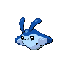

📖 英語版の図鑑説明
Though ball-like in shape, this Pokémon is a proficient swimmer. I have discovered that if a Mantyke spends much time with schools of Remoraid, it will eventually achieve evolution.
日本語訳
丸い体だが泳ぎは得意。テッポウオの群れと長く一緒に過ごすと、やがて進化することが分かった。
📝 この図鑑文に出てくる英単語
| 英単語 | 意味 | 品詞 | レベル |
|---|---|---|---|
| shape | 形 | 名詞 | 中2 |
| proficient | 熟練した | 形容詞 | 大学 |
| swimmer | 泳ぐもの | 名詞 | 中2 |
| discovered | 発見した | 動詞 | 中3 |
| schools | (魚の)群れ | 名詞 | 高校 |
| eventually | 最終的に | 副詞 | 高校 |
| achieve | 達成する | 動詞 | 高校 |
| evolution | 進化 | 名詞 | 高校 |
文法ポイント have discovered は「have/has + 過去分詞」の現在完了形。過去から今までの経験や継続、完了を表します。
if 〜 は「もし〜ならば」という条件を表す接続詞です。
💡 英語名「Mantyke」の由来
英語名「Mantyke」は、manta ray（マンタ）とtyke（ちびっ子）を組み合わせた名前と考えられている。フランス語の名前は「Babimanta」で、baby（赤ちゃん）、manta（マンタ）から作られている。
出典 Bulbapedia
📊 タマンタの種族値
HP45
こうげき20
ぼうぎょ50
とくこう60
とくぼう120
すばやさ50
合計 345
❓ よくある質問
- タマンタの英語名は？
- タマンタの英語名は「Mantyke」です。
- タマンタの英語名「Mantyke」の由来は？
- 英語名「Mantyke」は、manta ray（マンタ）とtyke（ちびっ子）を組み合わせた名前と考えられている。フランス語の名前は「Babimanta」で、baby（赤ちゃん）、manta（マンタ）から作られている。
- タマンタは英語版の図鑑でどう説明されている？
- 「Though ball-like in shape, this Pokémon is a proficient swimmer. I have discovered that if a Mantyke spends much time with schools of Remoraid, it will eventually achieve evolution.」と書かれています。日本語にすると「丸い体だが泳ぎは得意。テッポウオの群れと長く一緒に過ごすと、やがて進化することが分かった。」という意味です。
タマンタは第4世代（シンオウ地方）のポケモンです。第4世代（シンオウ地方）の英語名一覧 →